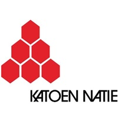

A propos de moi
Je m'appelle Boris BRAS, j'ai 27 ans. Après quelques expériences professionnelles diverses et variées, j'ai décidé de me reconvertir professionnellement dans un domaine pour lequel j'ai toujours eu une appétence innée, l’informatique.
Désireux de me former dans ce domaine j’ai décidé de me replonger dans les études au travers d’un BTS SIO option SISR en alternance afin d’être au plus prés du réel et du métier en étant au sein d’une entreprise.
Expérience professionnelle
Je suis actuellement au sein d’une entreprise de logistique, “SMDC Logistique” qui fait partie d’un grand groupe international dans le milieu de la logistique “KATOEN NATIE”. Cette entreprise se compose de 8 entrepôts de plusieurs milliers de m² et de 500 à 600 employés.
Mes missions au sein du groupe IT de SMDC Logistique est d’apporter un support utilisateurs sur le matériel informatique courant, participer à l’évolution de l’infrastructure réseau réel et logique du site afin qu’il réponde au mieux aux besoins client et aux normes du groupe ainsi que de veiller à sa maintenance.
Curriculum Vitae
Expériences Professionnelles
SMDC Logistique - Katoen natie / Août 2023 à maintenant
Technicien informatique
Laforêt - Août / Decembre 2022
Assistant de gestion locative et de co propriété
Gendarmerie National - Mars 2018 / Mars 2020
Gendarme Adjoint Volontaire APJA
Formation | Etablissement Scolaire
BTS SIO SISR - 2023 à maintenant
Nextech, 84000 Avignon
BTS CGO - 2014 / 2017
Lycée Montmajour, 13200 Arles
Bac STMG option Gestion Finance - 2014
Lycée Montmajour, 13200 Arles
Compétences
- A l'aise avec les systèmes d'exploitation Windows 7 & 10
- Assemblage PC
- Configuration routeur et pare-feu
- Gestion, administration et mise en place de serveur de jeux
- Notion de codage : Processing, Python, SQF et VBA Basic
Atouts
- Pragmatique
- Rigoureux
- Sérieux
Loisirs
- Informatique
- Aviation
- Sport
- Moto
- Tir Sportif